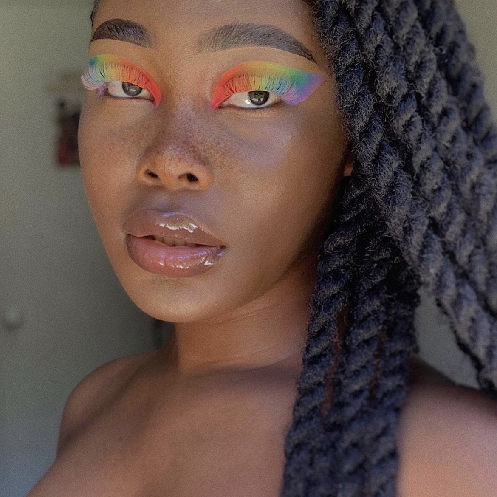
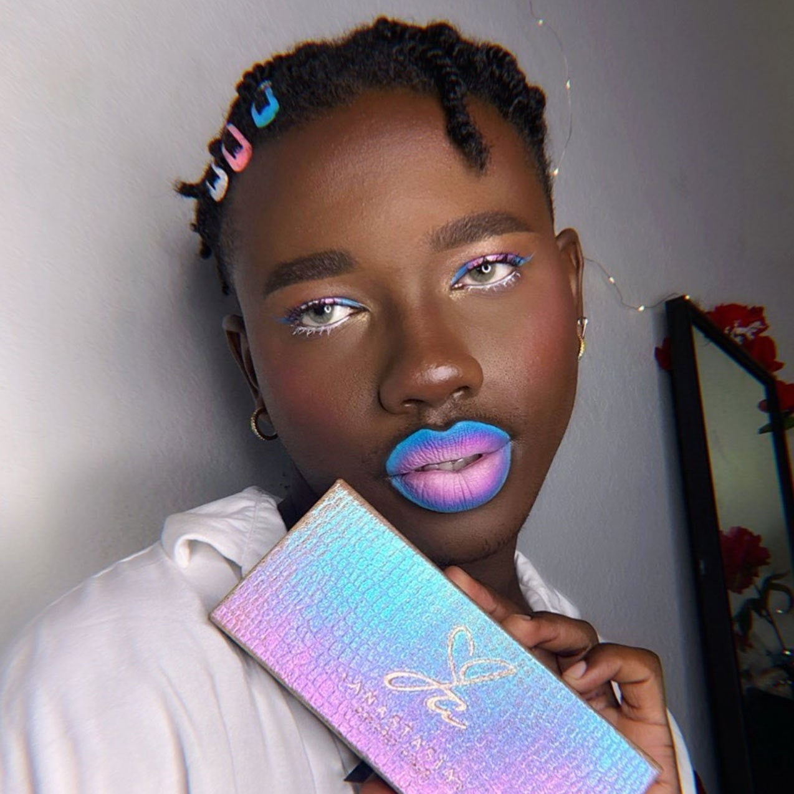
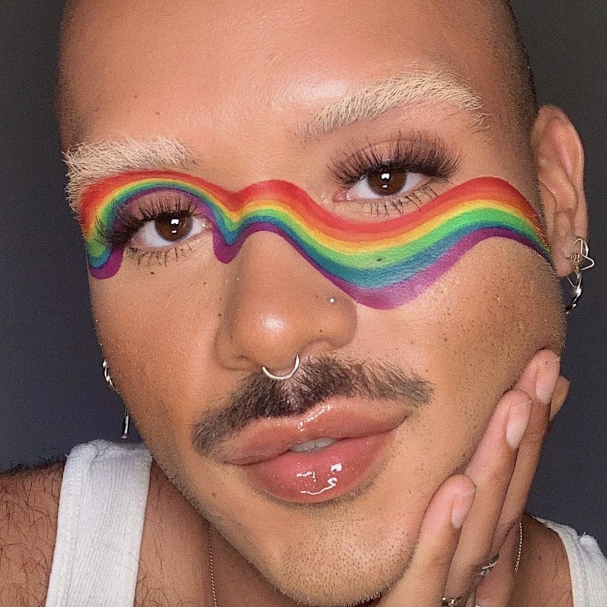
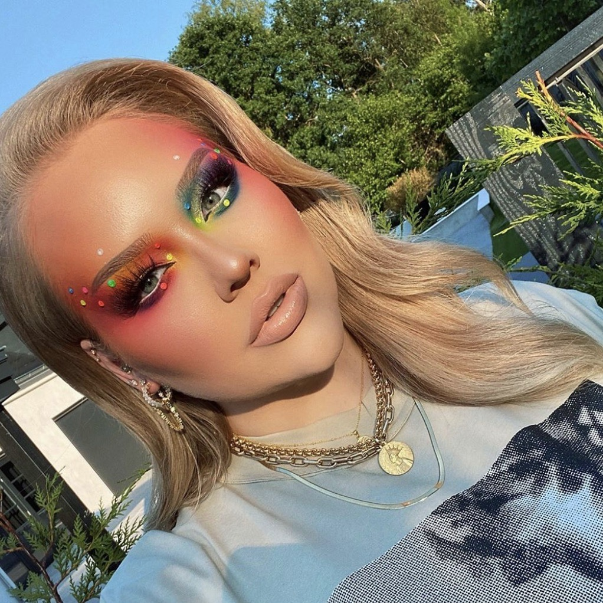
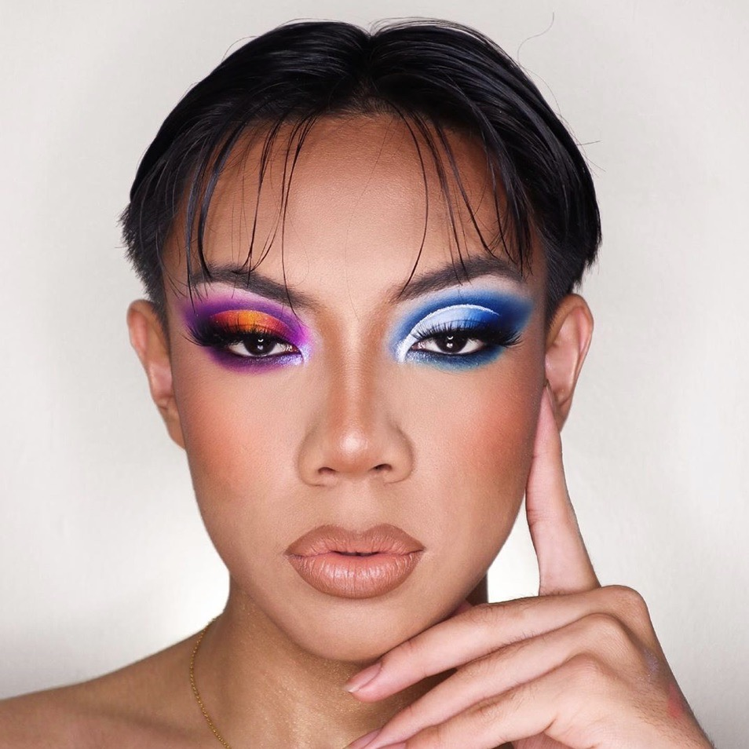
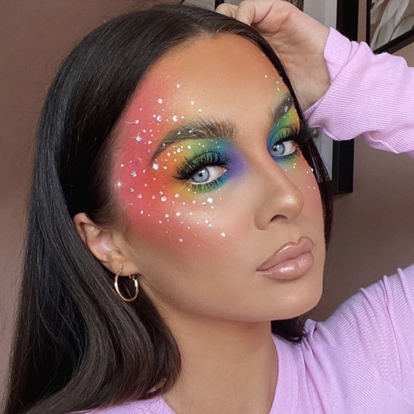
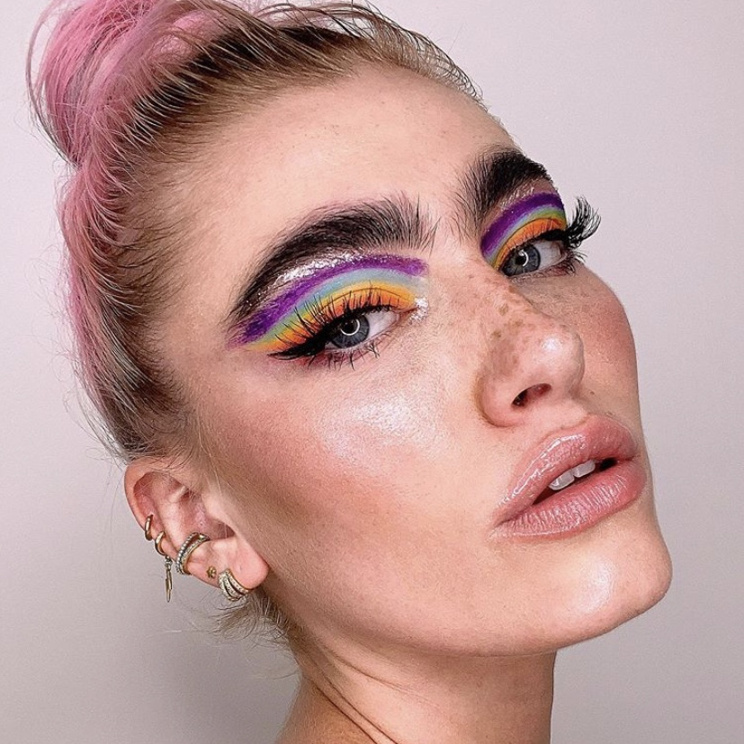
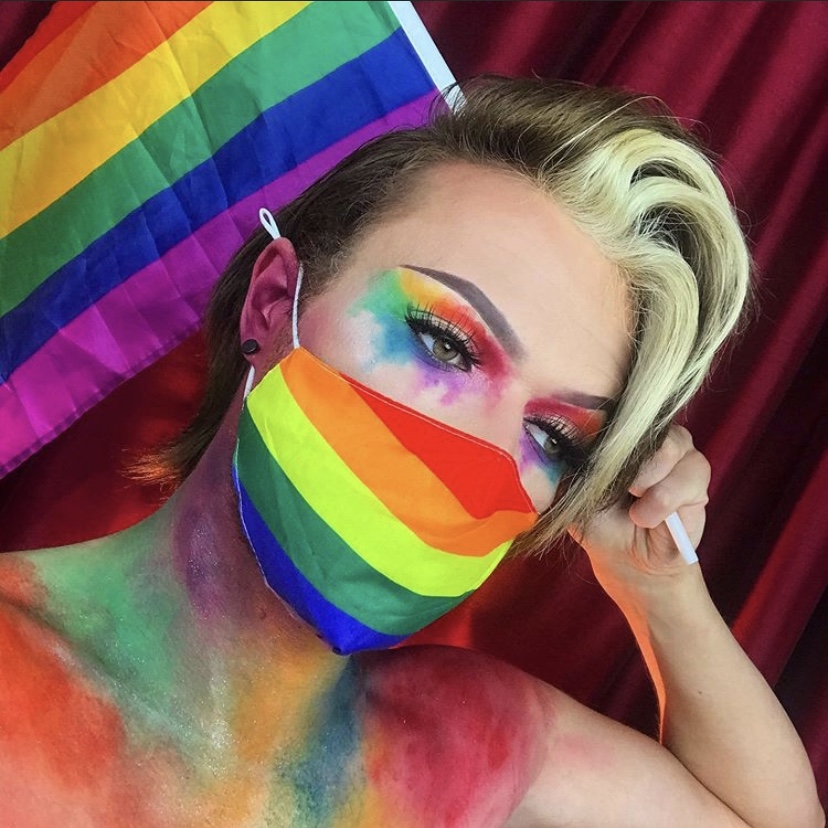

These artists celebrated Pride with unique makeup looks.
By Kaleigh Fasanella
For anyone unaware, Pride wouldn't exist as we know it if it weren't for the inimitable Marsha P. Johnson — a Black trans woman who was a pioneer in the Stonewall uprising of 1969, and an outspoken advocate for the LGBTQIA+ community and their rights as equals. This means Pride wouldn't be what it is today without Black people. Period. End of story. And so, with the month in full swing, we're taking the opportunity to spotlight just some of our favorite Pride-themed looks from Black beauty creators.
As you'll see, these artists — many of whom are self-taught — have gone above and beyond to create bold and ingenious looks that are unlike anything you've seen before. Their skill and imagination should be celebrated not only now during Pride month, but every day of the year. So once you're done scrolling through for inspiration, don't forget to throw them a follow on Instagram where they share their content on a regular basis.

Soreya, a 20-year old painter, wearing matching eyeshadow and eyelashes using the Slush Palette from September Rose Cosmetics, a Black-owned indie brand based in the U.K.

Inspired by the Transgender Pride Flag, Jeremiah created this colorful look using the sparkly pastel pink shade from the Anastasia Beverly Hills x Jackie Aina Palette.

Michael Brooks used both Depixm Cosmetic's Emulsions and Anastasia Beverly Hills' Norvina Electric Cake Liners to create the gorgeous rainbow, and then used Morphe x James Charles Palette eyeshadows to set the look.

We are loving this ethereal makeup by content creator, Nikke Tutorials. After doing YouTube for over 10 years, Nikkie came out as being transgender this year. Her beautiful Pride makeup was inspired by her fans.

Gabriel used a combination of the Morphe James Charles palette, 35B palette, and Jaclyn Hill palette to create this stunning look inspired by the Transgender Pride Flag.

This ethereal take on Pride makeup by Helen was created using the BPerfect Cosmetics Carnival XL palette, Jordan Aticia Cosmetics Fruit Punch Blush, and rhinestones.

India used Jane Davenport Colour Sticks to draw a beautiful rainbow on her eyes. We love the splash of silver under her brow bone and inside her inner corner.

This looks describes Pride 2020 in the best way. Bradley paired his rainbow look with a rainbow mask from Quinns Pharmacy.